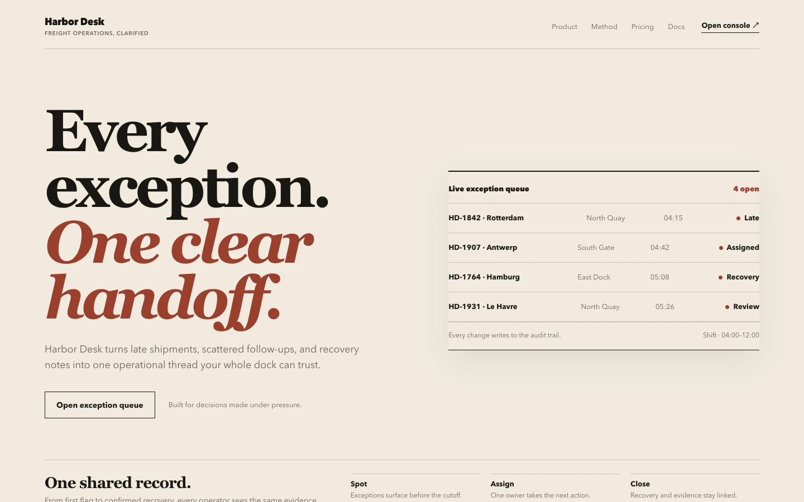
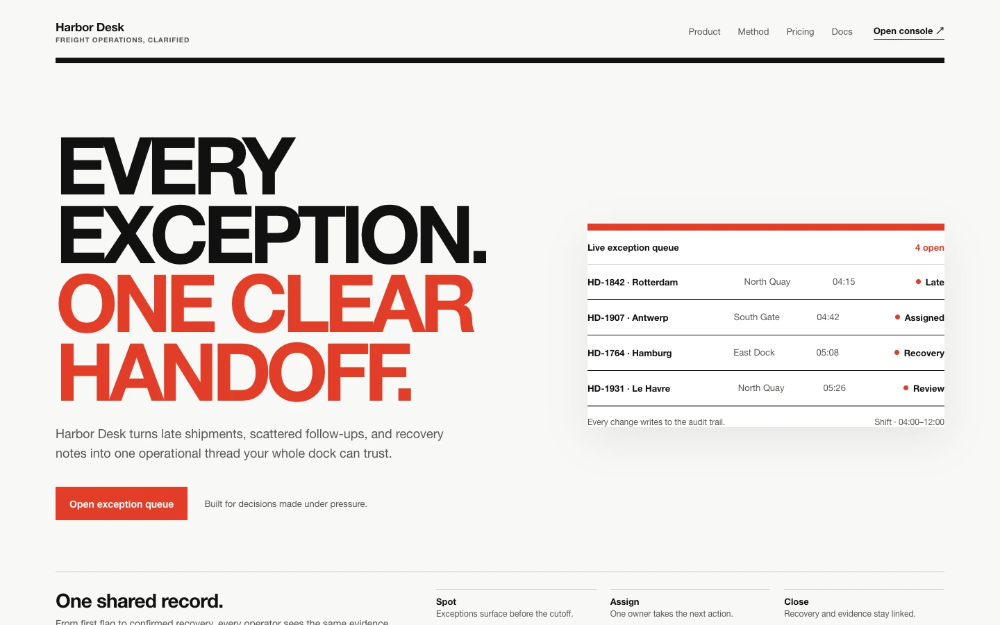
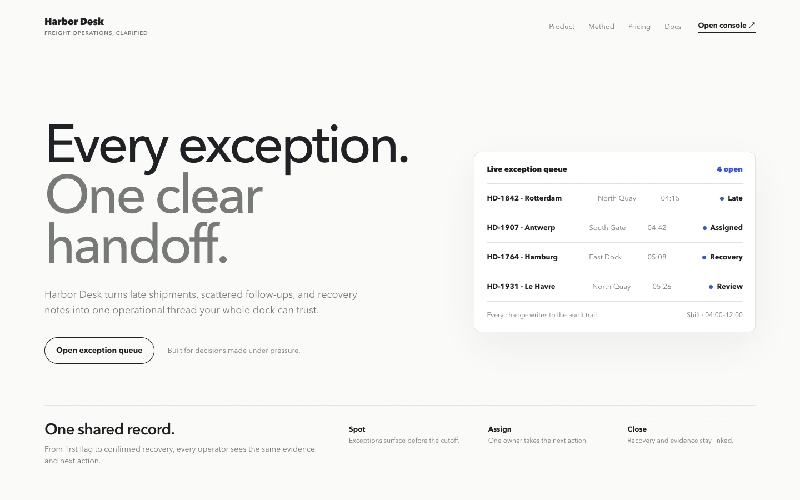
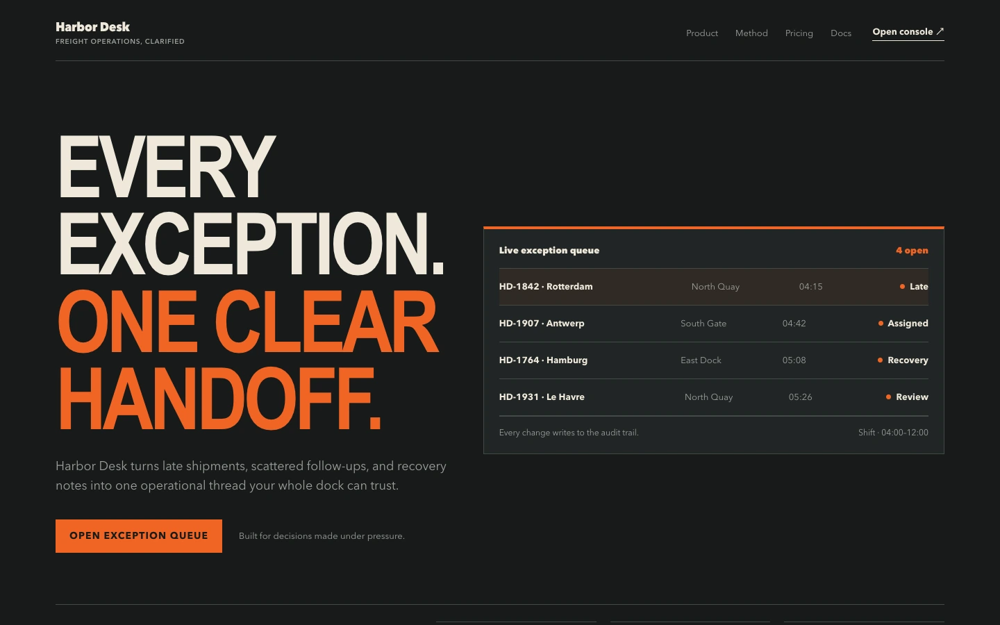
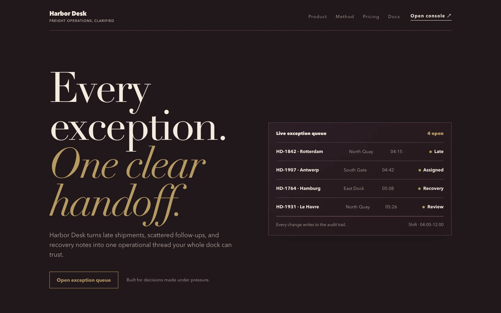
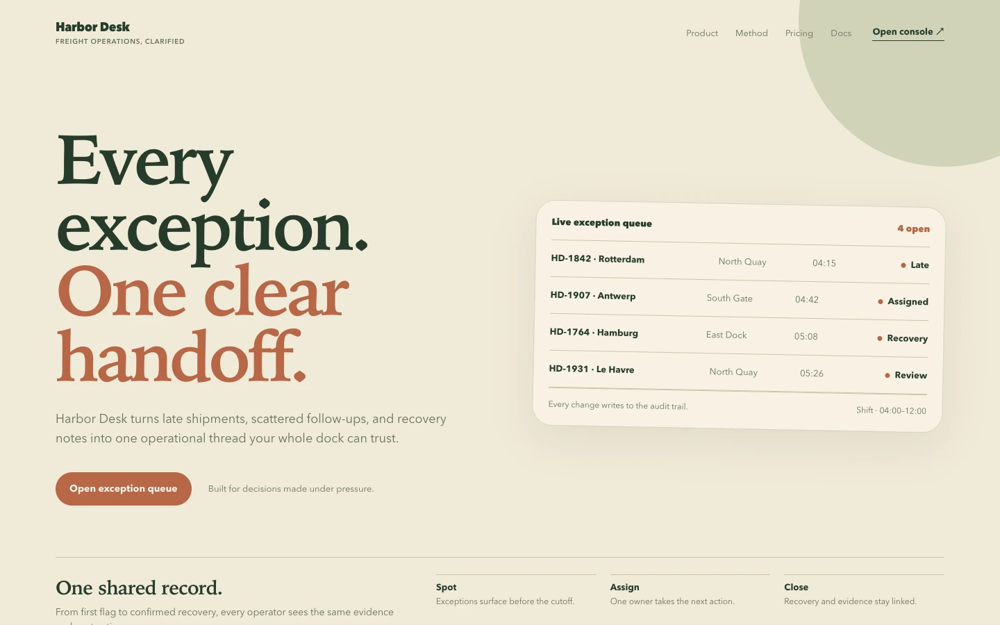
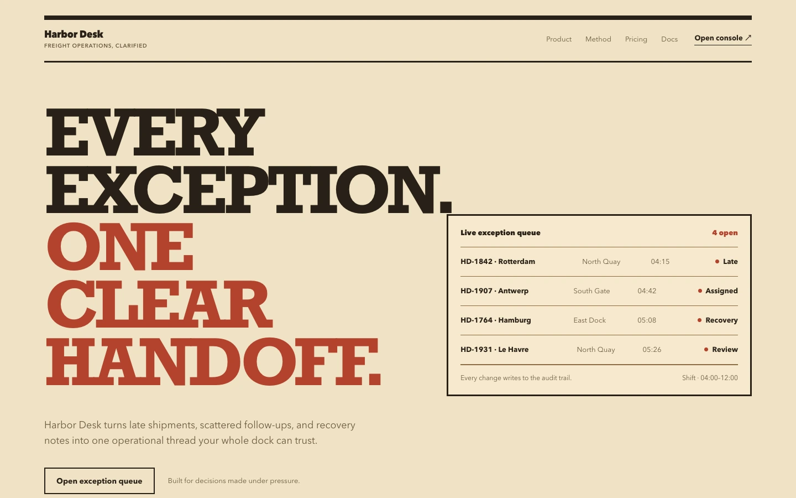
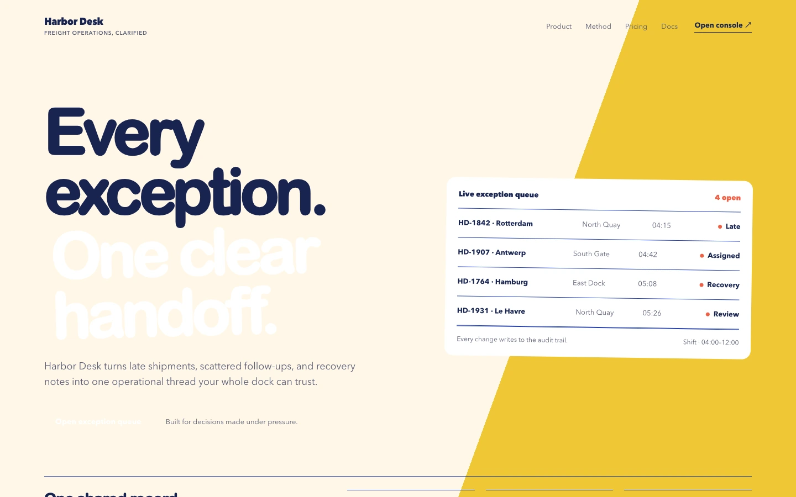
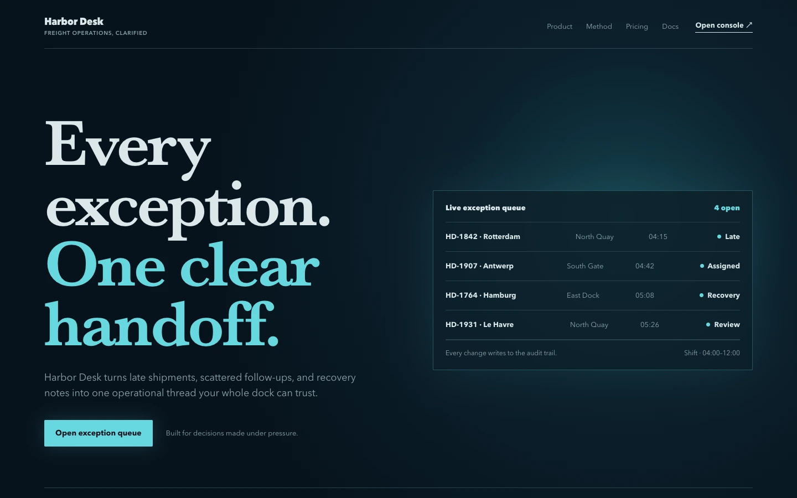
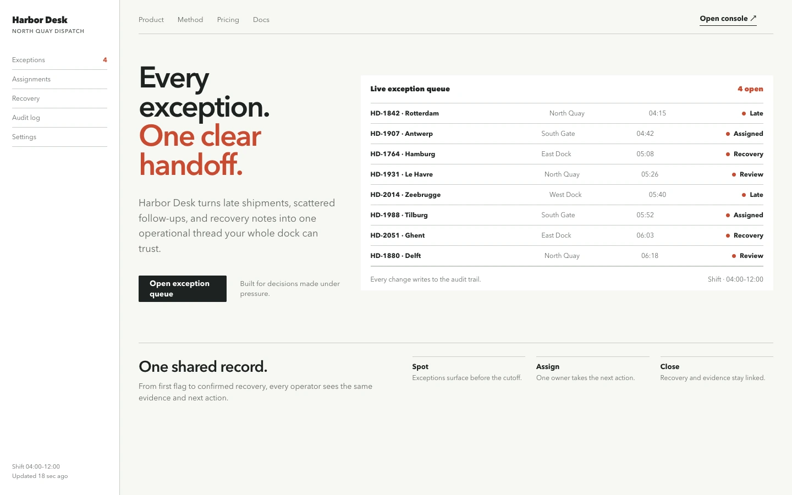

Editorial
editorialInk-and-paper authority with oversized serif type, fine rules, and asymmetrical columns.
Ten fixed references for the same Harbor Desk surface. Choose a direction by name; the core skill receives only its compact brief and constraints.

editorialInk-and-paper authority with oversized serif type, fine rules, and asymmetrical columns.

swissStrict grid, neutral grotesk type, hard alignment, and one signal color.

minimalQuiet surfaces, generous whitespace, precise typography, and almost no ornament.

industrialUtilitarian density, squared controls, compressed headings, and safety-color signals.

luxuryDeep tonal fields, elongated serif forms, exact margins, and material restraint.

organicEarthy color, humanist type, soft geometry, and compositions that feel grown rather than assembled.

retro-printWarm paper, slab-serif headlines, bold registration colors, and visible print rhythm.

playfulBright blocks, friendly geometry, surprising scale, and tactile but controlled movement.

cinematicDark atmospheric stages, luminous focal areas, restrained typography, and deliberate reveal.

data-denseOperational clarity with compact tables, strong row rhythm, tabular numerals, and explicit status.